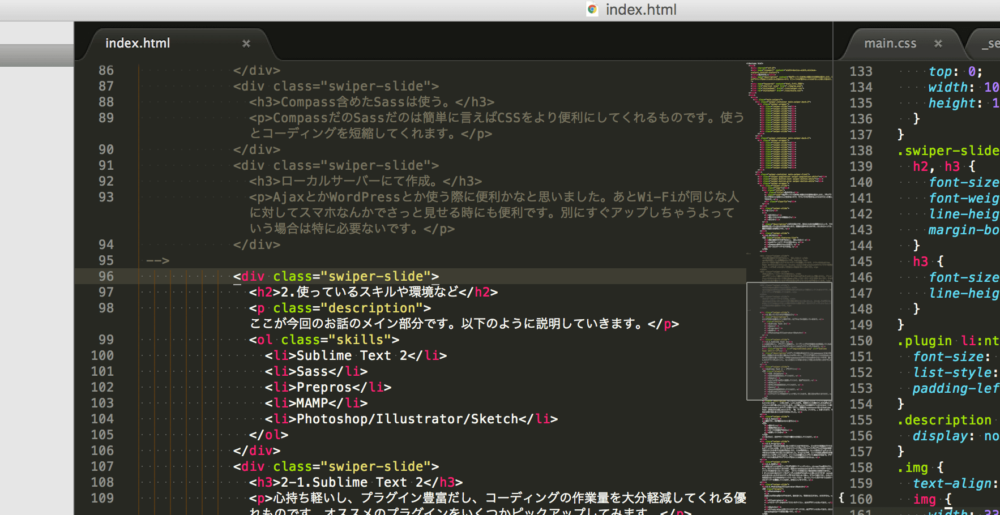

私のHTML
私がやっているHTMLの書き方を簡単に紹介します。プログラミング的なことはほとんど含まないので、そういうのが苦手な人々にはするっと導入できます。
もくじ
- はじめに
- 使ってるスキルや環境など
- まとめ
今日の流れです。初めに大まかな概要から入って、その後実際に使っているものの紹介をします。最後に全体のまとめです。まとめといっても最初の概要とほぼ同じです。
1.はじめに
- 特に最新のやり方ではない。（むしろ古い）
- jsのフレームワークとか使わない。
- Compass含めたSassは使う。
- ローカルサーバーにて作成。
2.使っているスキルや環境など
ここが今回のお話のメイン部分です。以下のように説明していきます。
- Sublime Text 2
- Sass
- Prepros
- MAMP
- Photoshop/Illustrator/Sketch
2-1.Sublime Text 2
心持ち軽いし、プラグイン豊富だし、コーディングの作業量を大分軽減してくれる優れものです。オススメのプラグインをいくつかピックアップしてみます。

エディタの最大手はおそらくDreamweaverかなと思います。転職のスキルに書く欄にもこれがあったし。ブラウザで言うところのIEみたいなものだと勝手に思ってます。今のDreamweaverがどうだかはわからないですが、重いしカスタマイズしにくいし、もっと他にいいのないかなって思ったのがきっかけでした。
Sublime Text 2 - プラグイン
- CSS Snipets
- CSSの自動補完をしてくれます。
- Emmet
- ctrl+Eすれば色々展開してくれて、楽ができます。
- HTML5
- HTML5の自動補完をしてくれます。
- Sass
- Sassの自動補完をしてくれます。
- SublimeLinter
- リアルタイムで文法のチェックをしてくれます。閉じ忘れがなくなります。
とりあえずこれ使えばそこそこコーディングは早くなるんじゃないかな・・・と思います。しかしながら、実際のところ慣れてしまえばなんだっていいと言う思っちゃったりします。上で話したように就活サイトのスキルシート欄にはDreamweaverしかエディタ無いですし。前職のDreamweaver使いにSublime Text 2の良さを力説したところで、「あ、そうなんだ。いいかも。」と言ったきり、それには乗り換えることはありませんでした。
2-2.Sass
便利です。何が便利なのかと言うと
- 見やすい
- 変数が使える
- コードの短縮ができる
- 計算してくれる
などなど、自分でコードを打つ量を大分減らしてくれます。
2-3.Prepros
Sassは一旦CSSに変換しないと使うことはできません。じゃあその変換はどうやるんだ？ってなった時、ターミナルやコマンドプロンプトというプログラム打ち込む画面であれやこれやをする必要があるんです。これが面倒臭い。もっと簡単にチョチョっとできるものは無いかと思ったらありました。Preprosです。こいつを使えば面倒な作業は全てこいつがやってくれます。ファイルの圧縮からスプライト画像の作成まで。デザイナーはこれ使えばプログラミング的なことは必要ありませんよ。
2-4.MAMP
出来上がったものをアップせずに素早くチェックしたい。chromeでua変えたりしたい。なんてことがよくあります。通常chromeはajaxとかそういうやつはローカルファイルでは動かなくなっています。（そういうの使わない場合は特に支障ありません。）だったらはじめからサーバにアップした状況でやればいいと思ったのですが、noindexとか色々あったりするのでアップするまではしたく無い。そういう感じです。このような状況においてこのMAMPはインストールしてはい、はいとしていくだけですぐさまローカルサーバーを構築してくれます。非常にいいやつです。
2-5.Photoshop/Illustrator/Sketch
- Photoshop
- 正直これがあれば全てができます。絵を描くも、写真を加工するも、UIを作るも。
- Illustrator
- ベクターデータなのでイラストやアイコン、UIのデザインに向いてます。
- Sketch
- Illustratorと同じでベクターデータです。UIデザインに向いてます。あとPhotoshopに比べて断然に軽いです。
3.まとめ
私が使っているのは
- Sublime Text 2でコーディング。
- PreprosでもってSassの展開やコードの圧縮。
- MAMPでローカルサーバ構築。
- デザインはPhotoshop/Illustrator/Sketch。Sketchはここにきて初めて触った。
という話でした。
JavaScriptをガリガリ書いていきたい。SPAで今時のサイト作りをしてみたい。などという場合はこの方法はあまり向いておりません。AngularJS 1・2、React、Vue.jsといったjsのフレームワークでもって構築するのがいいのかなと思います。
以上です！
ご静聴、ありがとうございました！
これ以上に楽が出来て素晴らしい環境がある場合、是非ご教授ください！とても喜びます。